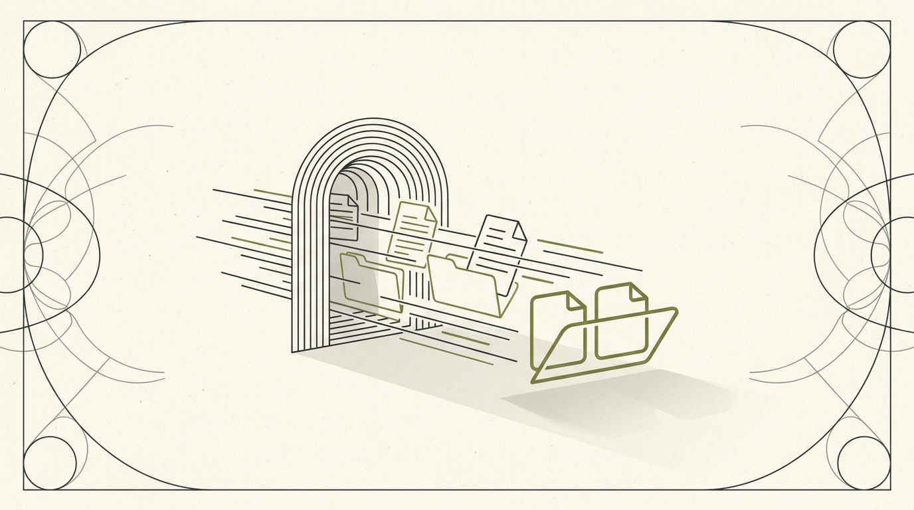

Moodle API
Reverse Engineering · APIA fast, multi-user API bolted onto Moodle — because the real thing is slow and offers none.

Moodle holds every course's materials, but getting at them programmatically means logging in and scraping HTML. I built a service that does it properly — fast, for many users at once, without re-downloading the same file twice.
The idea
Moodle is where the actual coursework lives, but there's no clean way to pull it. I wanted course lists and downloadable materials behind a simple authenticated API — the foundation something useful (a better client, an automation, a notifier) could sit on top of.
Speed
The obvious way to scrape a login-walled site is to drive a real browser, but that's slow. Instead this replays the login and page requests directly with requests, parsing the HTML itself — which made it 7.58× faster than a Selenium-based scraper: 2–4 seconds where the browser approach took 18–22.
Multi-user & dedup
It's built as a real service, not a one-off script: up to 50 concurrent users, each authenticating with their own Moodle credentials in a thread-safe way. Crucially, identical files (the same lecture PDF shared across a course) are stored once via content deduplication, saving 50–95% of storage, with smart caching and automatic cleanup on top.
Security
Sessions are protected with token authentication, requests are rate-limited (100/min per IP), idle sessions are cleaned up after ten minutes and cached files expire on a 24-hour TTL, with optional API-key auth in front of the whole thing.
Status
Honestly, a solid engine in search of a product. The service works and is genuinely fast, but I never built the thing that was meant to sit on top of it. It's here because the engineering — fast scraping, dedup, multi-user sessions — is worth showing even without the app.
Built with
Python with a requests-based scraper (no browser), HTML parsing, session-token authentication, content-hash file deduplication, in-memory session management with TTL cleanup, and rate limiting — packaged as a multi-user API service.